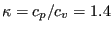
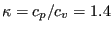
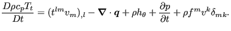

This section treats the laminar inviscid compressible flow across a NACA012-airfoil at Mach 0.95. The input deck (which is available in the large fluid examples test suite under the name naca012_mach0.95_veryfine.inp) runs like:
*NODE, NSET=Nall
1,7.600000000000e-04,-1.412800000000e-01,0.000000000000e+00
...
*ELEMENT, TYPE=F3D8, ELSET=Eall
1, 1, 34101, 39113, 34104, 34109, 34113,140301, 47554
...
MATERIAL,NAME=AIR
*CONDUCTIVITY
5.e-4
*FLUID CONSTANTS
1.,1.e-20,293.
*SPECIFIC GAS CONSTANT
0.285714286d0
*SOLID SECTION,ELSET=Eall,MATERIAL=AIR
*PHYSICAL CONSTANTS,ABSOLUTE ZERO=0.
*INITIAL CONDITIONS,TYPE=FLUID VELOCITY
Nall,1,1.d0
Nall,2,0.d0
Nall,3,0.d0
*INITIAL CONDITIONS,TYPE=PRESSURE
Nall,0.79145232
*INITIAL CONDITIONS,TYPE=TEMPERATURE
Nall,2.77008310
*VALUES AT INFINITY
2.77008310,1,0.79145232,1.,1.
**
*STEP,INCF=100000
*CFD,STEADY STATE,COMPRESSIBLE
1.,1.,,,
*BOUNDARYF
** BOUNDARYF based on in
6401, S6, 11,, 2.770083
...
*DFLUX
** DFlux based on airfoil
309, S2, 0.000000e+00
...
*MASS FLOW
** DFlux based on airfoil
309, M2, 0.000000e+00
...
*NODE FILE,FREQUENCYF=5000
MACH,VF,TSF,PSF,TTF
*END STEP
After the definition of the nodes and the elements (8-noded brick elements;
they are internally treated as finite volume cells; cf. Figure 32
and Figure 33 for
the mesh and geometry of the domain) the material is
defined. The heat capacity at constant pressure  is normalized to 1, the
dynamic viscosity
is normalized to 1, the
dynamic viscosity  is set to a very low number (), so the flow is
frictionless. The specific gas constant is such that
. The initial conditions are set to a unit velocity in x-direction
is set to a very low number (), so the flow is
frictionless. The specific gas constant is such that
. The initial conditions are set to a unit velocity in x-direction  and a static pressure and static temperature value such that the density
and the Mach number
where L is the length of the
airfoil in x-direction, which happens to be 1. These are also the boundary
conditions at the inlet, set by a *BOUNDARYF card. Other boundary conditions
are zero mass flow through the airfoil surface, zero mass flow in z-direction
(the flow is modeled as a 2-dimensional flow) and zero mass flow at part of
the far-away-boundary, all obtained by use of the *MASS FLOW card. On these
same boundaries the heat flow is set to zero by use of a *DFLUX card. Finally,
output is requested for the Mach number, the velocity, the static temperature,
the static pressure and the total temperature. Due to the parameters on the
*CFD card the fluid flow is compressible (the definition of the density is not
required on the material cards) and will continue till steady state. Right no,
no check on steady state is implemented and the calculation will continue
till the number of iterations on the *STEP card is reached.
and a static pressure and static temperature value such that the density
and the Mach number
where L is the length of the
airfoil in x-direction, which happens to be 1. These are also the boundary
conditions at the inlet, set by a *BOUNDARYF card. Other boundary conditions
are zero mass flow through the airfoil surface, zero mass flow in z-direction
(the flow is modeled as a 2-dimensional flow) and zero mass flow at part of
the far-away-boundary, all obtained by use of the *MASS FLOW card. On these
same boundaries the heat flow is set to zero by use of a *DFLUX card. Finally,
output is requested for the Mach number, the velocity, the static temperature,
the static pressure and the total temperature. Due to the parameters on the
*CFD card the fluid flow is compressible (the definition of the density is not
required on the material cards) and will continue till steady state. Right no,
no check on steady state is implemented and the calculation will continue
till the number of iterations on the *STEP card is reached.
The results are presented in Figures 34, 35, 36 and 37. The calculation was interrupted after 75,000 iterations, the maximum Mach number may still increase a little by continuing the calculation. The total temperature is nearly constant. Recall that the total change of the total temperature along a stream line is given by:
|  | (1) |
The terms on the right hand side correspond to the viscous work (zero), the heat flow (nonzero, since the heat conduction coefficient is nonzero), the heat introduced per unit mass (zero), the change in pressure (zero in the steady state regime) and the work by external body forces (zero).